分享 python 几个常见的爬虫库设置代理IP的方法
首先获取一个可用的IP
在做测试之前，我们需要先获取一个可用代理，搜索引擎搜索“代理”关键字，就可以看到有许多代理服务网站，在网站上会有很多免费代理，比如西刺这里列出了很多免费代理，但是这些免费代理大多数情况下都是不好用的，所以比较靠谱的方法是购买付费代理，很多网站都有售卖，数量不用多，买一个稳定可用的即可，可以自行选购。
或者如果我们本机有相关代理软件的话，软件一般会在本机创建 HTTP 或 SOCKS 代理服务，直接使用此代理也可以。
如果机机器安装了一部代理软件，它会在本地端口（例如：9743）上创建 HTTP 代理服务，也就是代理为 127.0.0.1:9743，另外还会在 9742 端口创建 SOCKS 代理服务，也就是代理为 127.0.0.1:9742，我只要设置了这个代理就可以成功将本机 IP 切换到代理软件连接的服务器的 IP了。
设置代理后测试的网站为：//httpbin.org/get，访问该站点可以得到请求的一些相关信息，其中 origin 字段就是客户端的 IP，我们可以根据它来判断代理是否设置成功，也就是是否成功伪装了IP。
下面我们来看下各个库的代理设置方式。
Urllib
首先我们以最基础的 Urllib 为例，来看一下代理的设置方法，代码如下：
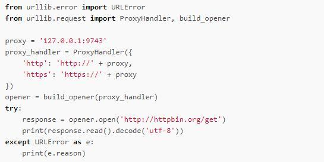
运行结果如下：
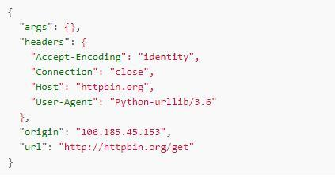
在这里我们需要借助于 ProxyHandler 设置代理，参数是字典类型，键名为协议类型，键值是代理，注意此处代理前面需要加上协议，即 http 或者 https，此处设置了 http 和 https 两种代理，当我们请求的链接是 http 协议的时候，它会调用 http 代理，当请求的链接是 https 协议的时候，它会调用https代理，所以此处生效的代理是：//127.0.0.1:9743。
创建完 ProxyHandler 对象之后，我们需要利用 build_opener() 方法传入该对象来创建一个 Opener，这样就相当于此 Opener 已经设置好代理了，接下来直接调用它的 open() 方法即可使用此代理访问我们所想要的链接。
运行输出结果是一个 Json，它有一个字段 origin，标明了客户端的 IP，此处的 IP 验证一下，确实为代理的 IP，而并不是我们真实的 IP，所以这样我们就成功设置好代理，并可以隐藏真实 IP 了。
如果遇到需要认证的代理，我们可以用如下的方法设置：
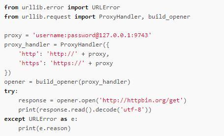
这里改变的只是 proxy 变量，只需要在代理前面加入代理认证的用户名密码即可，其中 username 就是用户名，password 为密码，例如 username 为foo，密码为 bar，那么代理就是 foo:bar@127.0.0.1:9743。
如果代理是 SOCKS5 类型，那么可以用如下方式设置代理：
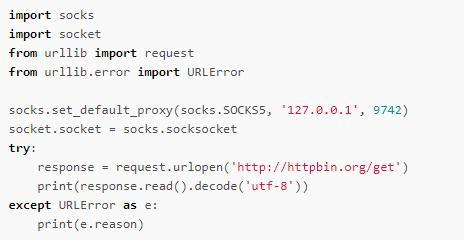
此处需要一个 Socks 模块，可以通过如下命令安装：1
pip3 install PySocks
本地我有一个 SOCKS5 代理，运行在 9742 端口，运行成功之后和上文 HTTP 代理输出结果是一样的：
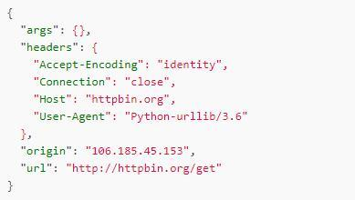
结果的 origin 字段同样为代理的 IP，设置代理成功。
Requests
对于 Requests 来说，代理设置更加简单，我们只需要传入 proxies 参数即可。
还是以上例中的代理为例，我们来看下 Requests 的代理的设置：
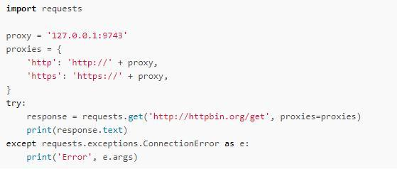
proxy = ‘username:password@127.0.0.1:9743’
和 Urllib 一样，只需要将 username 和 password 替换即可。
如果需要使用 SOCKS5 代理，则可以使用如下方式：
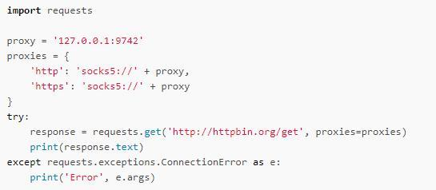
在这里需要额外安装一个 Socks 模块，命令如下：
pip3 instal requests[socks
运行结果是完全相同的：
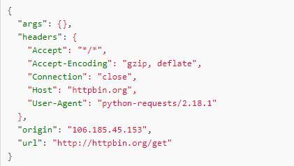
另外还有一种设置方式，和 Urllib 中的方法相同，使用 socks 模块，也需要像上文一样安装该库，设置方法如下：
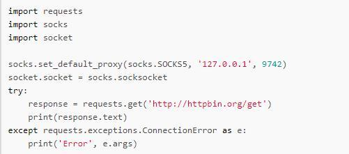
这样也可以设置 SOCKS5 代理，运行结果完全相同，相比第一种方法，此方法是全局设置，不同情况可以选用不同的方法。
Selenium
Selenium 同样也可以设置代理，在这里分两种介绍，一个是有界面浏览器，以 Chrome 为例介绍，另一种是无界面浏览器，以 PhantomJS 为例介绍。
Chrome
对于 Chrome 来说，用 Selenium 设置代理的方法也非常简单，设置方法如下：
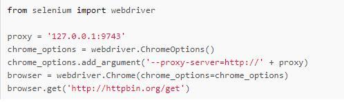
在这里我们通过 ChromeOptions 来设置代理，在创建 Chrome 对象的时候通过 chrome_options 参数传递即可。
这样在运行之后便会弹出一个 Chrome 浏览器，访问目标链接之后输出结果如下：
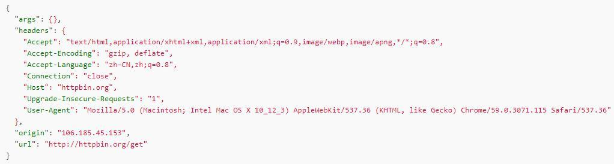
可以看到 origin 同样为代理 IP 的地址，代理设置成功。
如果代理是认证代理，则设置方法相对比较麻烦，方法如下：
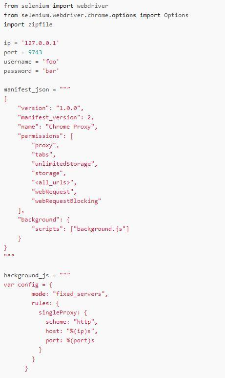
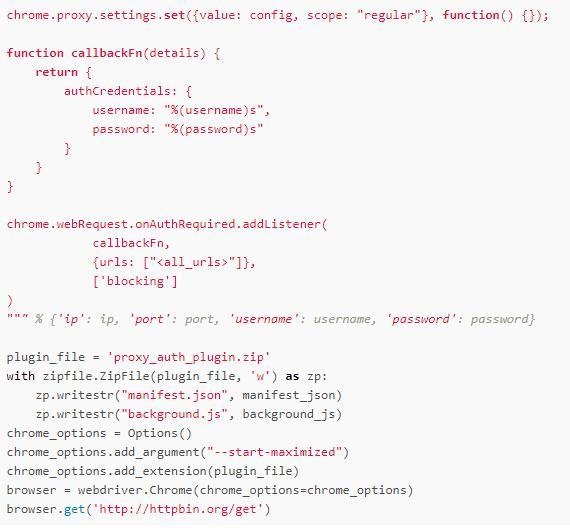
在这里需要在本地创建一个 manifest.json 配置文件和 background.js 脚本来设置认证代理，运行之后本地会生成一个 proxy_auth_plugin.zip 文件保存配置。
运行结果和上例一致，origin 同样为代理 IP。
PhantomJS
对于 PhantomJS，代理设置方法可以借助于 service_args 参数，也就是命令行参数，代理设置方法如下：
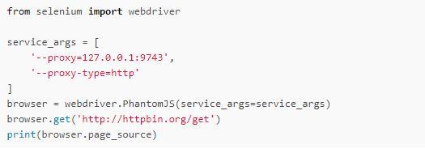
在这里我们只需要使用 service_args 参数，将命令行的一些参数定义为列表，在初始化的时候传递即可。
运行结果：
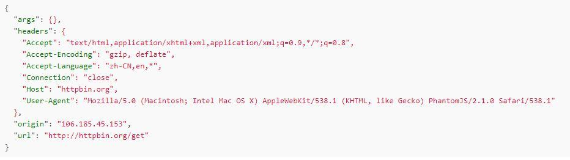
运行结果的 origin 同样为代理的 IP，设置代理成功。
如果需要认证，那么只需要再加入 –proxy-auth 选项即可，这样参数就改为：
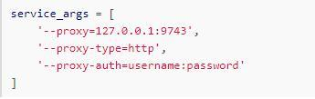
将 username 和 password 替换为认证所需的用户名和密码即可。